Wir haben eine Medienkrise
Dokumentarfilm, 55 Minuten
Mit Aaron Täschler
Regie, Drehbuch, Konzeption, Kamera, Postproduction
Das Vertrauen in die News-Medien ist rückläufig, sogar in der schönen, heilen Schweiz.
Besonders der öffentliche Rundfunk steht hierzulande wie auch weltweit unter politischem Druck.
Der Schweizer SRG wird aus rechtsbürgerlichen Kreisen tendenziöse Berichterstattung vorgeworfen.
Eine Halbierung der Gebühren wird gefordert.
Eine derart drastische Budget-Reduktion hätte zur Folge, dass über 3000 hochqualifizierte Medienschaffende auf den Markt entlassen werden.
Für die beiden Multimedia-Studenten Aaron und Luca ist das im Bachelor-Semester keine so rosige Aussicht.
Was hat es mit dem grossen Misstrauen von rechts und dem weltweiten Angriff auf den öffentlichen Rundfunk auf sich?
Bröckelt unsere vierte Säule der Demokratie?
Sind wir nach dem Studium arbeitslos?
Wir suchen nach Antworten.
Auf einer chaotischen Odyssee quer durch die Schweiz treffen wir Akteur:innen aus der Politik (u.a. SP-Nationalrätin Jaqueline Badran und SVP-Nationalrat Andreas Glarner), der SRG (Public Affairs Leiterin Stephanie Jutzi und Reporter Donat Hofer) und der Wissenschaft (Prof. Vinzenz Wyss) und tauchen ein in eine hitzige Debatte um die Rolle und Verantwortung des öffentlichen Rundfunks.
«Wir haben eine Medienkrise» war mein Bachelor-Lehrprojekt im Multimedia Production Studium und wurde mit der Note 6 ausgezeichnet.
Infos über eine Veröffentlichung folgen!
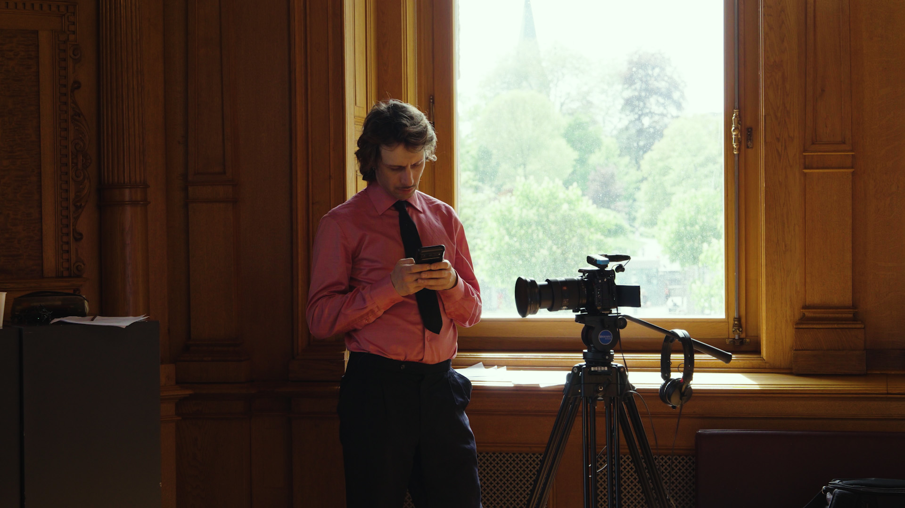
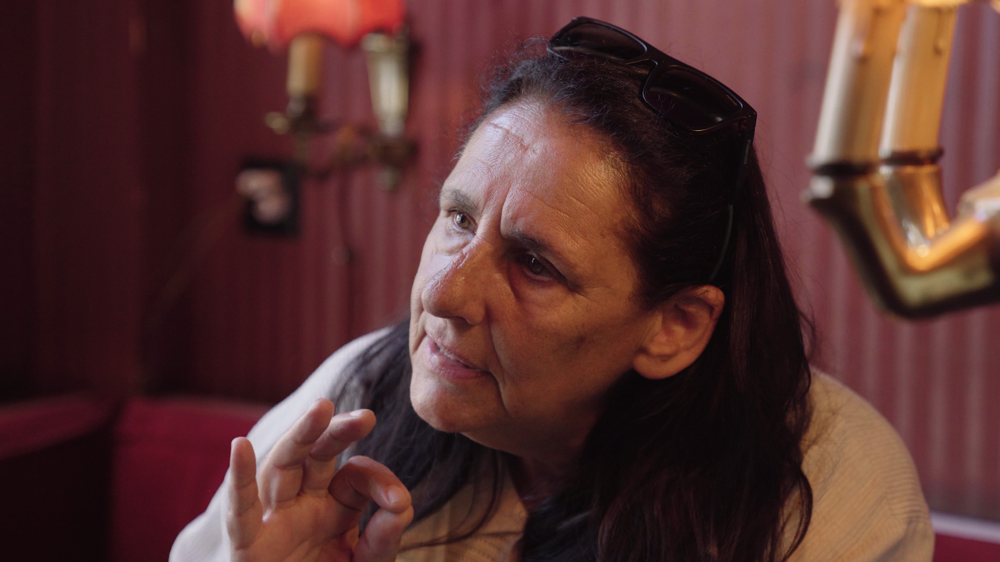
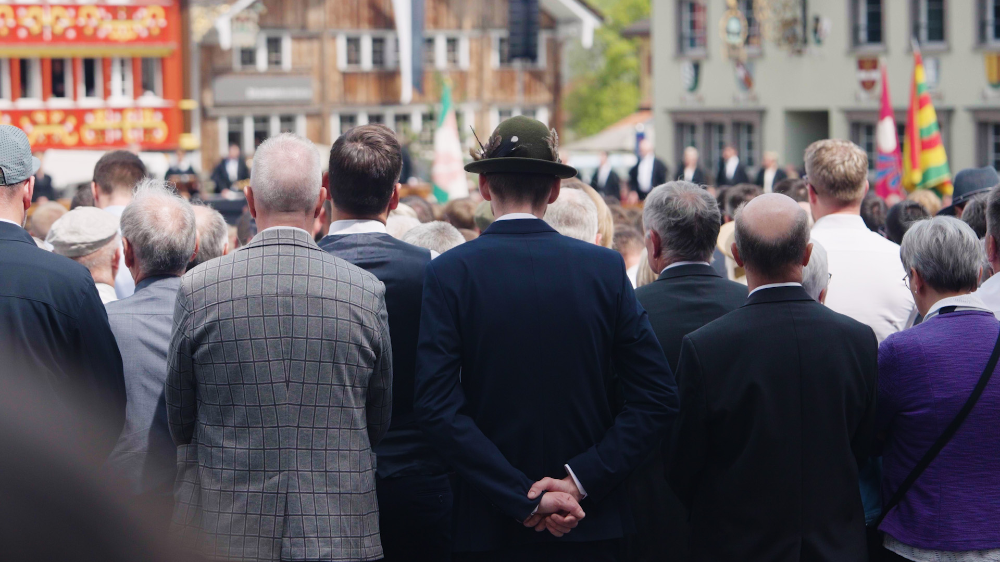
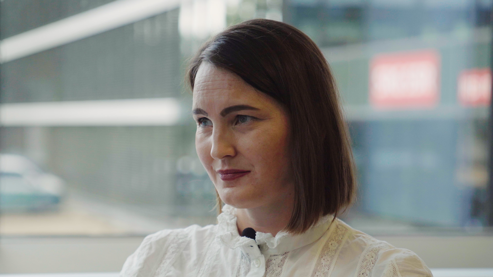
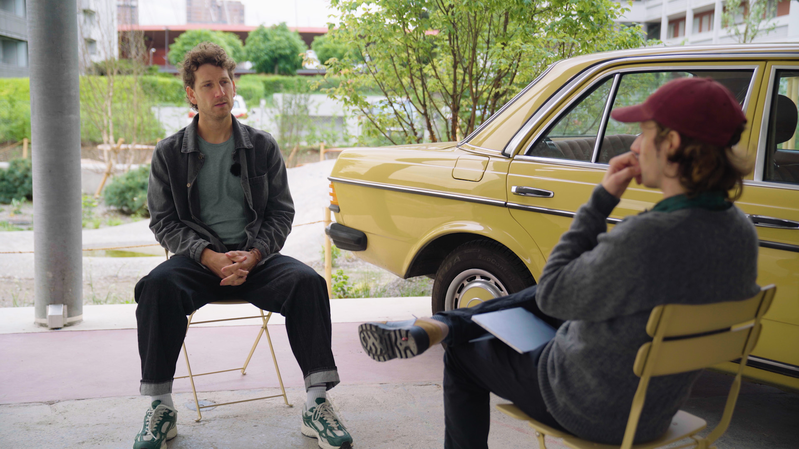
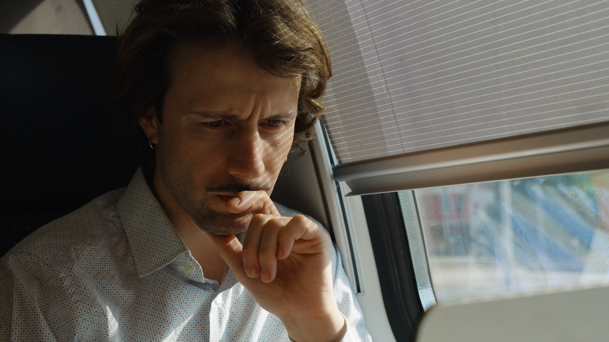
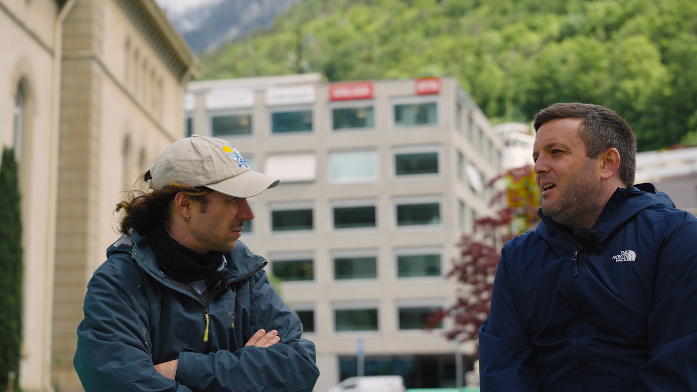
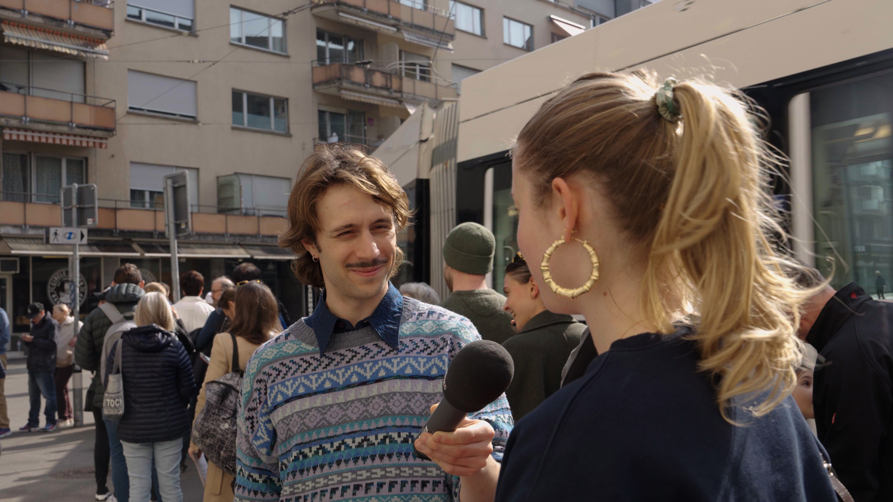
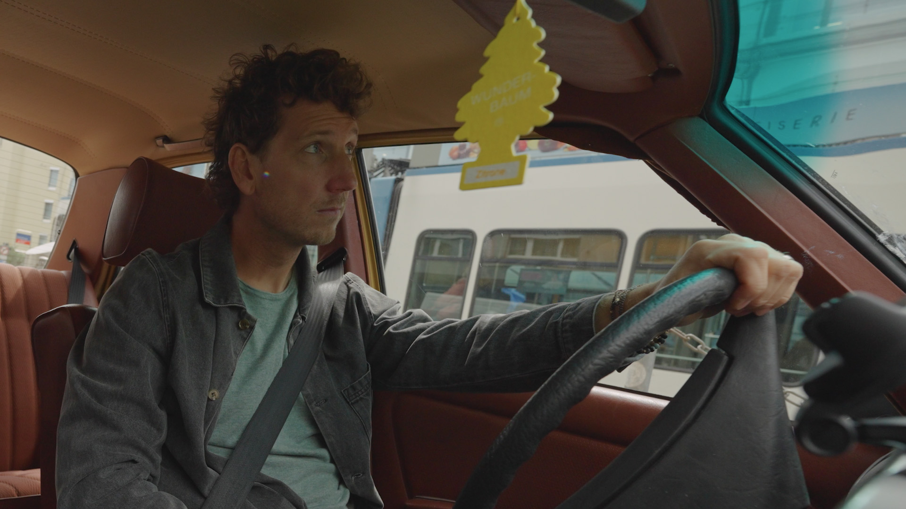
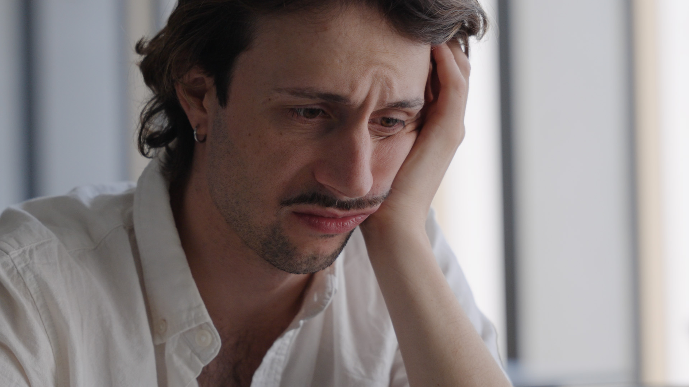
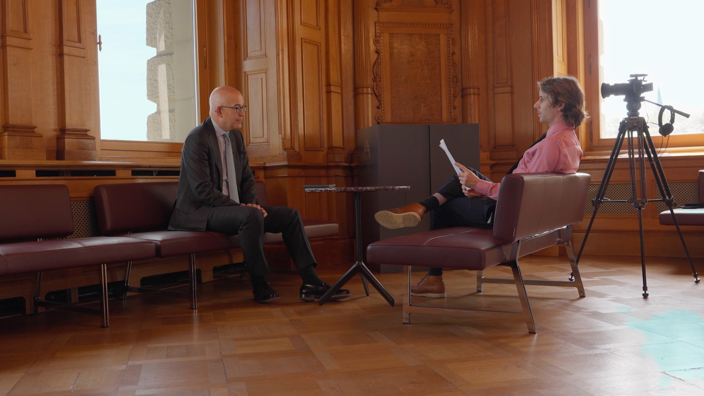
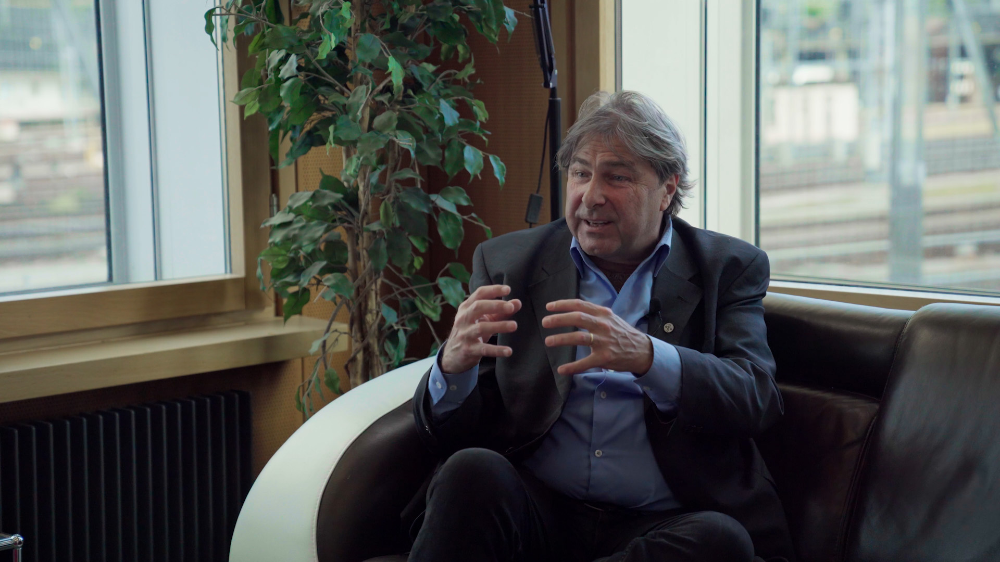
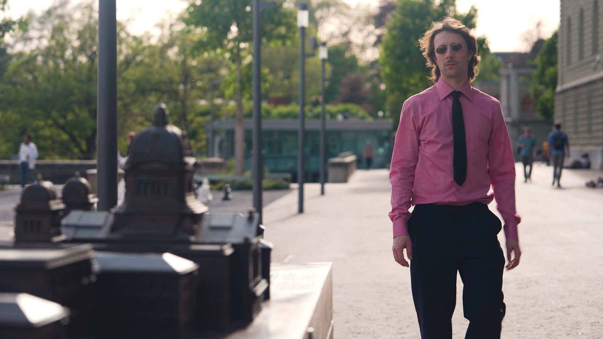